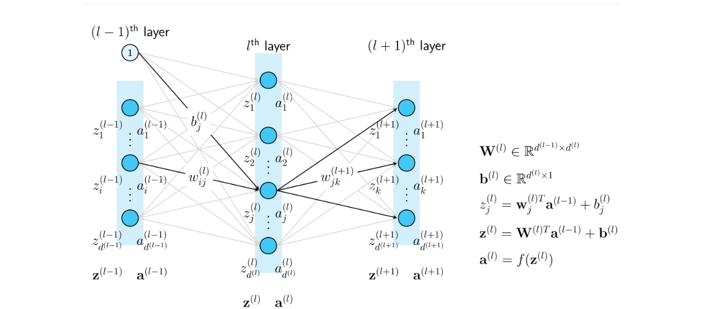

Multi Layer Perceptron (MLP)
Introduction
As you know, some algorithms such as linear regression, logistic regression, softmax classification, or Perceptron learning algorithms (PLA) need classes to be linearly separable (which is difficult in real life). To solve this, multi layer perceptron (MLP) is used.
Problem Description
Suppose you have datasets like this:

The classes are not linearly separable, so we will use MLP to tackle this. We will add one hidden layer between the input layer and the output layer as shown below:

Behind the Scenes
This diagram shows more details about the MLP structure:
Note:
W(l) represents the weights in layer l, z(l) is the weighted sum, b(l) is the bias, and f(.) is often the ReLU activation function or other activation functions.
Derivative of the Loss Function
The derivative of the loss function with respect to a single component of the weight matrix in the final layer:
Where \( e_j^{(L)} \) is defined as:
The bias derivative is:
Continuing from equation (1):
Where:
In which:
is understood as the row \( j-th \) of matrix \( \mathbf{W}^{(l+1)} \) (Note the colon; when the colon is absent, I assume it represents a column vector). The sigma notation sums up in the second row of the operation appearing as \( a_j^{(l)} \) contributing to the calculation of all \( z_k^{(l+1)} \), \( k = 1, 2, \dots, d^{(l+1)} \). The derivative expression outside the big parentheses is due to \( a_j^{(l)} = f(z_j^{(l)}) \). Up to this point, we can see that having a simple activation function with simple derivatives will be very helpful for computations.
Result
We achieved 99.33% accuracy on the dataset using 20 hidden units and one hidden layer.

Requirements
- Python
- Softmax regression
- CrossEntropy
- Gradient Descent